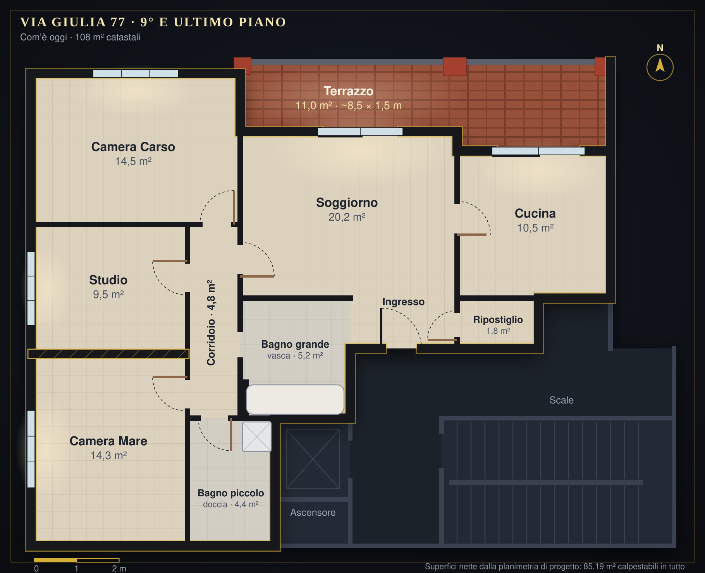

Nove piani sopra la città, con tutto sotto casa.
Vivere al 9° e ultimo piano di Via Giulia 77 significa avere luce da due lati, l'altopiano del Carso davanti e il traffico della città lontano, nove piani più in basso.
Superfici nette dalla planimetria di progetto (in tutto 85,19 m² calpestabili). I 108 m² catastali comprendono anche i muri e una parte del terrazzo. Il terrazzo è lungo circa 8,5 m e profondo circa 1,5 m.


Infissi a triplo vetro 2022–2023
Fornitura serramenti IPR triplo vetro con tenuta certificata alla Bora fino a Cat. 5 e abbattimento acustico 33 dB.
Palazzo di fine anni '80 (abitabilità 1990) con un appartamento già rinnovato dove conta: con il Superbonus 110% sono stati fatti il cappotto termico tutto intorno alla casa, gli infissi a triplo vetro, la porta blindata e la caldaia a condensazione (2022). I lavori energetici più costosi sono già fatti. Sopra c'è solo la grande terrazza condominiale con i pannelli fotovoltaici: nessun vicino al piano di sopra.
-
01.
Posto auto coperto di proprietà (C/6, 13 m²) Al piano interrato S1 dello stabile: l'ascensore arriva al portone d'ingresso al piano terra, da cui due rampe di scale interne (14 gradini) scendono all'autorimessa.
-
02.
Classe energetica B (APE ottobre 2024) Fabbisogno non rinnovabile di appena 59,09 kWh/m² anno. Spesa per riscaldamento e acqua calda stimata in ~€ 580–680 l'anno, contro circa € 1.900–2.400 di un alloggio tipico in classe G.
-
03.
Spazi ampi e due bagni completi Spazi generosi con pavimento uniforme in gres porcellanato sabbia, salone panoramico, cucina abitabile con uscita sul terrazzo in klinker, doppi bagni (vasca padronale + box idromassaggio con radio FM e LED) e tre camere, con soffitti alti 2,70 m.
-
04.
Documenti in regola, pronti per il rogito Conformità urbanistica, catastale e tavolare attestata da un architetto (2021); trasformazione in piena proprietà già approvata dal Comune di Trieste e prezzo di vendita libero, senza vincoli PEEP.